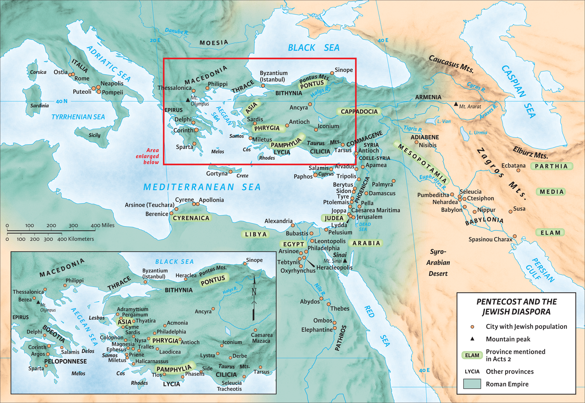

El miércoles por la noche en el estudio bíblico, la clase que enseñé discutió el sermón de Pedro en Hechos 2 y el asombroso resultado que siguió después. Una conexión que no hicimos y que es realmente interesante es la conexión que Hechos 2 tiene con Génesis 11.
En Génesis 11, el pueblo de la tierra ha decidido desobedecer el mandato de Dios de “llenar la tierra” (9:1, 7). Este plan de tener el mundo lleno de personas se originó en el jardín: 1:28. ¡Dios quería que el mundo estuviera lleno de personas! Sin embargo, cuando llegamos a Génesis 11, el pueblo tiene un plan diferente. Quieren construir una ciudad y hacerse famosos, de lo contrario serán dispersados. ¡El pueblo está en directa desobediencia!
“…no sea que seamos dispersados sobre la faz de toda la tierra.” (Gén 11:4, NBLA)
Al final, Dios confunde los idiomas del pueblo y hace que se dispersen. En el capítulo anterior, Génesis presenta a los tres hijos de Noé (Sem, Cam y Jafet) y dónde vivieron sus descendientes. Génesis 11, entonces, ayuda a explicar cómo comenzó la separación de los descendientes de Noé.

Lo que es interesante en Génesis 11 es que Dios no quería que el pueblo fuera un solo pueblo, sino que quería que se dispersara. La manera en que logró esa misión fue haciendo que todo el pueblo hablara diferentes idiomas.
Sin embargo, cuando llegamos a Hechos 2, Dios hace algo diferente. En el día de Pentecostés, hay mucha gente en Jerusalén. Algunos probablemente se quedaron después de la Pascua, apenas 50 días antes. En Hechos 2:9–11 vemos una larga lista de lugares de donde proviene esta gente. Lo primero que llama la atención es que estos lugares son lugares donde vivieron los descendientes de Noé — compara ambos mapas. Es más, los apóstoles recibieron el Espíritu Santo y comenzaron a hablar diferentes idiomas de modo que “cada uno los escuchaba hablar en su propia lengua” (Hech 2:6). Dios estaba trayendo de vuelta, en cierto sentido, a los descendientes de Noé, reunificando su idioma, y luego hace algo más.

Pedro predica su sermón sobre quién es realmente Jesús y cómo el pueblo lo mató. Cuando termina, el pueblo está “compungidos de corazón” (Hech 2:37). Preguntan qué necesitan hacer. Se arrepienten, son bautizados y se convierten en parte del pueblo de Dios. Estas personas de diferentes regiones se unen y se convierten en un solo pueblo. La unidad del pueblo de Dios se ve en el resto del capítulo (2:42–47). Hay muchos pasajes en el Nuevo Testamento que hablan de la unidad del pueblo de Dios.
Lo que Dios hizo en Hechos 2 fue una reversión espiritual de Génesis 11. Pero aún tenemos el mismo llamado de “llenar la tierra.” En Mateo 28:19, se nos dice:
“Vayan, pues, y hagan discípulos de todas las naciones, bautizándolos en el nombre del Padre y del Hijo y del Espíritu Santo.” (Mat 28:19, NBLA)
Es la voluntad de Dios que la tierra esté llena de un solo pueblo: los cristianos.
Hay más que decir sobre Génesis 11 y el Nuevo Testamento, pero quería poner a pensar en estas conexiones mientras estudian Hechos en sus iglesias o estudios personales.
A Él sea la gloria.